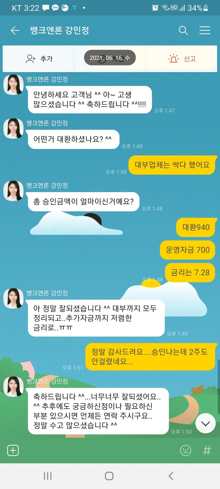

[사업자대출] 강민정상담사님~감사합니다...
사업자 등록 거의 6개월차~기대출 2천정도...
대출금액은 크진않지만 대부업체 대출건수가 과다라
자금이 필요해도 나오는데도 없고 힘든 상황이었는데 강민정상담사님께서 건강보험료나 연금 납부내역3개월치 확인만 되면 대환에 추가운영자금까지 알아봐 주실수 있다고 하셔서 저는 배우자 앞으로 건보료가나가고 있어서 연금 3개월 납부하자마자 담날로 전화를 드렸고 바로 담날 서류를 준비해서 알아봐주신 저축은행 가서 서류접수하고 8일만에 승인나서 바로가서 약정서에 싸인하고 대환 940에 추가자금 700 까지 승인 입금 바로 받았습니다~사업자대환은 2주걸린다고 하셨는데 생각보다 더빨리 승인이 나서 대부쪽 싹다 정리했네요~막막해하고 있었는데 상담사님 덕택에 큰짐 하나 덜었습니다...뱅크앤론 많이 소개해야겠어요...다른분들도 혼자고민하지마시고 일단 상담부터 받아보시기를 추천드립니다~~감사합니다....
